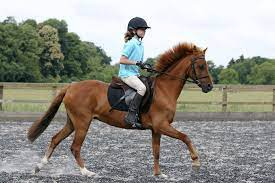

Welcome to my webpage! Let's talk about horseback riding!
Do you have a love for horses? Well, I do and I've been riding horses since I was 7 years old! On my website, you will be able to see what a typical day looks like at the barn.You will see what a regular schedule would look like and more. Hopefully you'll get a closer look at what it's like to ride horses! Whether you've never been around horses or not, horseback riding is an incredible and life changing experience.

More Information
Follow my instagram @ilovehorses
Horseback riding is a huge responsibility. It's important to be aware of everything that this sport entails before committing. You must arrive 30 minutes before your lesson to get your horse and then brush him off. Then, you need to put their tack on and take them out to the ring. After your lesson, you must clean the horse and tack. This activity is something that takes up a lot of your time, but it's definitely worth it. The bond you build with a horse is a feeling you will never feel with anything else. It's truly magical.
What you need to start riding horses
- Riding pants
- Boots
-
Helmet
- It's important to have the proper riding pants to help with your ride.
- Riding boots are useful when riding and also walking around the barn.
- Helmets are the most important!!! Make sure it fits you properly.
go to a farm website
Here's an example of the order in which things get done aroud the barn. Something important to note is that you will spend more time getting the horse ready and taking care after then actually riding the horse. Horseback riding is an activity that really shows people how to be responsible. Riding is also a great way to relax and step away from reality.
| Tasks | Get horse | Groom horse | Ride Horse | Clean Horse |
| Time | 10 mins | 15 mins | 25mins | 25 mins |